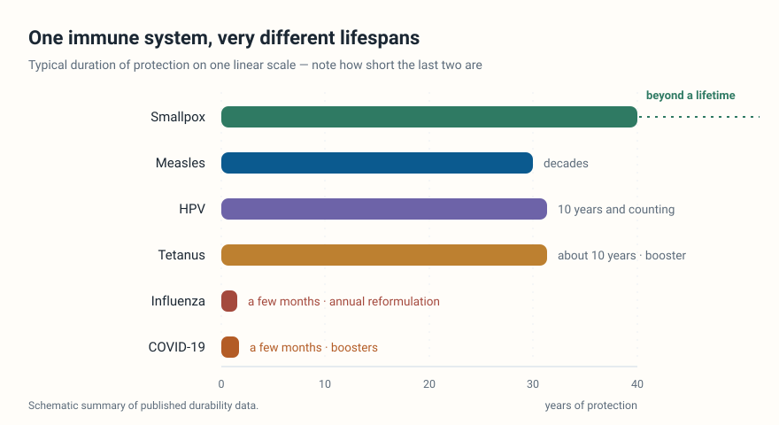

Xu Lab

Research
Long-lived plasma cells (LLPCs) are terminally differentiated B cells residing in specialized survival niches, primarily within the bone marrow and mucosal tissues, that continuously secrete antibodies without requiring restimulation for up to a lifetime. As the cornerstone of long-term serological memory, LLPCs serve as the primary source of durable antibody protection following infection or vaccination. However, the durability of vaccine-induced protection varies dramatically, from lifelong immunity following smallpox vaccination to waning protection within months for influenza vaccine. This variation is shaped by both intrinsic factors (vaccine platform, antigen properties) and extrinsic influences (metabolic states, microenvironmental signals). Focusing on these extrinsic and intrinsic regulatory axes, we demonstrate that intermittent fasting elevates β-hydroxybutyrate (BHB), which activates HCAR2 signalling on LLPCs. This activation, via the HCAR2-Gαi-cAMP axis, downregulates CXCR4, disrupting LLPC retention in the bone marrow niche and triggering their egress and apoptosis, thereby depleting the LLPC pool and impairing immune memory (Immunity, 2026). Complementing this extrinsic pathway, our recent work reveals that intrinsic receptor signalling through TACI, but not BCMA, sustains bone marrow plasma cells by inhibiting mitochondrial reactive oxygen species (ROS) accumulation (Nature Communications, 2026).
Dr. Xu’s laboratory is dedicated to deciphering the cellular and molecular mechanisms that govern the establishment and maintenance of long-lived plasma cells in bone marrow and mucosal niches. By translating these fundamental insights into rational vaccine design, his team aims to develop next-generation adjuvants to promote plasma cell bone marrow engraftment and persistence, thereby enhancing the efficacy and durable protection of vaccines against existing and emerging pathogens.
How is humoral immune memory maintained over decades?
Humoral immune memory and vaccine immunity
Survival and maintenance of long-lived plasma cells (LLPCs)
What does the bone marrow niche provide for LLPC survival?
Bone marrow niche and extrinsic regulation of LLPC longevity
How does systemic metabolism shape plasma cell longevity?
Immunometabolism: ketone bodies, HCAR2 signalling and CXCR4-mediated retention
Can we design vaccines that protect for longer?
Rational design of highly effective, durable vaccines
How are antibody-secreting cells maintained in the mucosa?
Mucosal niche and intestinal IgA plasma cell persistence
News
- Sep 2026Our step-by-step protocol for in vivo labeling of bone marrow plasma cells was published in STAR Protocols.
- Jul 2026Our study on TACI-mediated regulation of mitochondrial ROS in bone marrow plasma cells was published in Nature Communications.
- Apr 2026Our study on intermittent fasting and humoral immune memory was published in Immunity. It was highlighted by Nature Reviews Immunology (Link), with a preview in Immunity (Link).
- Aug 2025Our collaborative study on haematopoietic stem cell numbers was published in Nature.
- Jul 2022Our collaborative study on how brain motor and fear circuits regulate leukocytes during acute stress was published in Nature.
- Feb 2022Our collaborative study on how the gut microbiota controls iron availability and haematopoietic stem cell fate was published in Cell Stem Cell.
- Jan 2021Our collaborative study on nociceptive nerve regulation of haematopoietic stem cell mobilization was published in Nature.
- Jan 2021Prof. Xu's study showing that nociceptors protect against vaso-occlusive episodes in sickle cell disease was published in the Journal of Experimental Medicine and highlighted by Science Translational Medicine (Link).
- Aug 2020Prof. Xu's study on how the gut microbiome regulates psychological stress-induced inflammation was published in Immunity. It was highlighted by Nature (Link) and by Science Translational Medicine (Link), with a preview in Immunity (Link).
- Jun 2020Our collaborative study on how Snai2 maintains bone marrow niche cells was published in Developmental Cell.